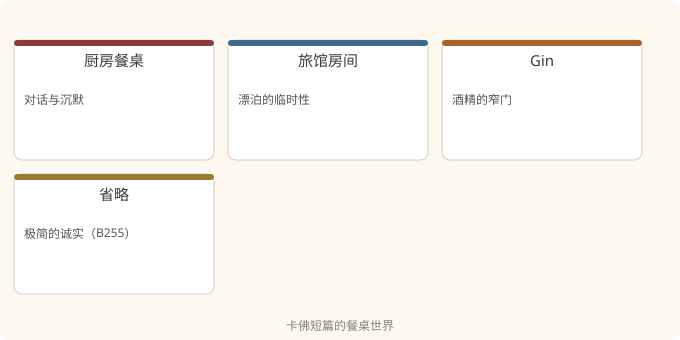

当我们谈论爱情时我们在谈论什么
一、基本信息
| 作者 | 雷蒙德·卡佛 |
|---|---|
| 成书/出版 | 1981年出版（Britannica：What We Talk About When We Talk About Love (1981)） Raymond Carver — Encyclopaedia Britannica（百科全书） |
| 国别/地区 | 美国 |
| 时代 | 现当代 · 20世纪 |
| 体裁 | 短篇小说集 |
| 语言 | 英语 |

卡佛短篇的餐桌世界（主题·结构图）
二、创作背景
Britannica：卡佛'stripped-down, minimalist prose style is remarkable for its honesty and power'（削减到极简的文体以诚实与力量著称——B255）；风格'受海明威与贝克特影响——spare and flat but powerfully suggestive'（B255）。
被视为20世纪晚期英语短篇小说复兴的关键人物（B255：helping revitalize the English-language short story）。
三、内容脉络
十七篇（篇数通说待核）：《当我们谈论爱情时我们在谈论什么》《一件事若何？》《大教堂不在本集》（集外）——旅馆房间、厨房餐桌上的对话与沉默（通说）。
四、主要人物表
| 人物 | 身份 | 说明 |
|---|---|---|
| 丈夫们与妻子们 | 底层劳动 poorer | 餐桌上的失语（通说） |
五、主题与艺术特点
- '极简'的诚实与力量（B255）。
- 普通生活的不可言说（通说）。
- 劳动 poor 的挣扎（B255：struggles of the working poor）。
六、影响与评论
- Britannica：'helping revitalize the English-language short story in the late 20th century'（B255）。
Raymond Carver — Encyclopaedia Britannica（百科全书） - 极简主义（minimalism）与'脏现实主义'标签（通说待核）。
Raymond Carver — Encyclopaedia Britannica（百科全书）
七、阅读建议
难点
- 省略的艺术——沉默大于对话。
- 戈登·利什编辑争议（版本学）。
- 《当我们谈论爱情时我们在谈论什么》（译林出版社，通说待核）。
先读同名篇 →《一件很好很好的事》→ 对照《大教堂》（1984）。
八、待核实
- 篇目数量（十七篇说）核对。
- 利什编辑争议细节待核。
- 中译本信息核对。
本页主要来源
雷蒙德·卡佛的其他收录作品：当我们谈论爱情时我们在谈论什么大教堂